Papel
Misionero.
Cincuenta años
de raíz.
Propuesta de renovación de identidad visual. Investigación, estrategia y cinco caminos creativos para proyectar a Papel Misionero hacia su próximo medio siglo.
Documento confidencial. Contenido: contexto, territorio, diagnóstico, insights, cinco propuestas con aplicaciones, evaluación comparativa y recomendación.
01 — Contexto
Una industria que nació del orgullo misionero.
Papel Misionero fue concebida a comienzos de los años 70 como un proyecto colectivo: más de 400 inversores, sumados al Estado provincial y nacional, dieron origen a la primera papelera integrada de la provincia. Cinco décadas después, es la única planta del país que produce papel kraft a partir de fibra virgen de pino, y una pieza estratégica de la división Packaging de Grupo Arcor.
02 — Territorio
Selva, tierra colorada y fibra larga.
La marca tiene algo que pocas compañías del sector pueden reclamar: un origen preciso y valioso. Misiones es selva paranaense, suelo rojo, agua, comunidades originarias y una cultura del trabajo forestal. La provincia misma eligió la tierra colorada y el agua como signos de su marca territorial bajo la idea de que «en Misiones lo bueno crece».
Araucaria
La Araucaria angustifolia, o pino Paraná, es nativa de la región y Monumento Natural Provincial por ley. Protegida y no comercial, es el emblema perfecto de una empresa que produce con pino cultivado y conserva la selva nativa.
Tierra colorada
El rojo de la tierra misionera es el color más reconocible del territorio. Aporta calidez, identidad y un contrapunto natural al verde de la selva y al marrón del kraft.
Comunidad Mbya Guaraní
La reserva de Papel Misionero alberga comunidades Mbya Guaraní con las que la empresa desarrolla proyectos productivos y educativos. Un vínculo que la identidad debe honrar con respeto, sin apropiarse de su iconografía.
03 — Mercado y arquitectura
Una marca que viaja a 40 países.
Los grandes productores globales de papel y packaging comunican desde la escala, la tecnología y una sustentabilidad genérica. Pocos hablan de un lugar. Para un papel que compite en el mundo, el origen es un diferencial: fibra virgen, bosque cultivado, energía de biomasa y una reserva de selva nativa. La nueva identidad debe funcionar en una bolsa de cemento de 50 kg, en una etiqueta de bobina de exportación y en un perfil digital, y convivir con las demás marcas del grupo.
Escala vs. origen
Actores globales como Smurfit Westrock, Mondi, Klabin o Billerud construyen marcas corporativas de alcance mundial. Papel Misionero puede ocupar un espacio propio: el del papel con procedencia, trazable desde el vivero hasta la bolsa.
Pensada para la flexografía
La marca se imprimirá mayormente a una tinta sobre kraft. Esto exige formas sólidas, trazos generosos, buen rendimiento en tamaños chicos y versiones monocromáticas impecables.
Familia de marcas — División Packaging, Grupo Arcor
04 — Diagnóstico
Un símbolo con historia, listo para evolucionar.
La identidad vigente reúne una araucaria de trazo fino y las iniciales PM. Es un activo con memoria: la sigla PM está instalada en la región y el árbol conecta de manera directa con el territorio. El desafío es preservarlos y llevarlos a un lenguaje contemporáneo.
- PreservarLa araucaria como símbolo de origen y la sigla PM como nombre corto de uso cotidiano.
- FortalecerEl grosor del trazo, para garantizar lectura en tamaños pequeños y en impresión flexográfica sobre kraft.
- IncorporarUn sistema de color propio, versiones horizontal, vertical y de símbolo aislado, y una tipografía institucional.
- ProyectarUna marca que hable de integración, sustentabilidad y procedencia ante clientes nacionales e internacionales.
05 — Insights
Cinco verdades, cinco caminos.
Cada propuesta creativa nace de una verdad concreta de la compañía. Juntas cubren el espectro que va de la continuidad a la ruptura, para que la decisión sea estratégica y no solo estética.
Somos de acá
La araucaria es el árbol que todo misionero reconoce y el símbolo que la empresa ya tiene.
→ 01 AraucariaDel bosque al papel
El producto y su origen son inseparables: cada pliego contiene un bosque gestionado.
→ 02 PliegoEl nombre es la marca
«Misionero» es gentilicio, pertenencia y orgullo. El nombre puede ser el símbolo.
→ 03 MisioneroTodo empieza en un anillo
Los anillos de crecimiento del árbol y la bobina de papel comparten la misma forma.
→ 04 AnillosMedio siglo de procedencia
Para exportar a 40 países, el origen certificado es un argumento comercial.
→ 05 SelloAraucaria
La evolución natural de la marca. La araucaria se sintetiza en un trazo único y constante: un tronco firme y tres niveles de ramas en candelabro, fieles a la silueta del pino Paraná adulto. El logotipo en mayúsculas espaciadas aporta solidez institucional. Continuidad y modernización en equilibrio.
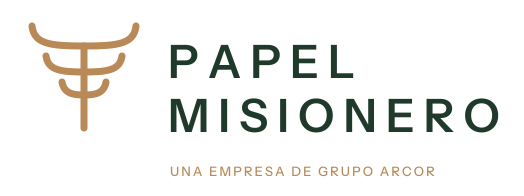
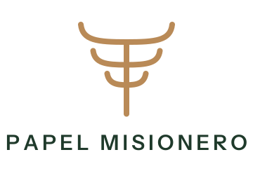
Pliego
Del bosque al papel en un solo gesto. La araucaria habita un pliego kraft con la esquina plegada: origen y producto se funden en un signo compacto y amigable. Su forma cerrada lo vuelve ideal como sello de calidad en bolsas, etiqueta de bobina o ícono digital.

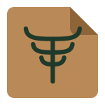
Misionero
El nombre como emblema. La primera «i» de misionero se transforma en araucaria: el fuste es el tronco y el punto florece en copa. Una tipografía de carácter editorial y el rojo de la tierra colorada le dan a la marca una voz propia, cálida y memorable. Un logotipo que no necesita símbolo aparte.

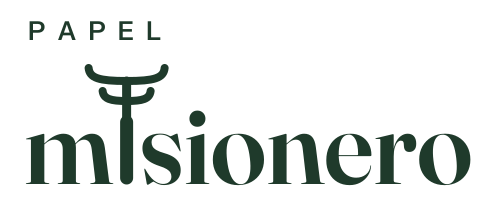
Anillos
Todo empieza en un anillo. Los anillos de crecimiento de un tronco y el corte de una bobina de papel comparten la misma forma: círculos concéntricos que guardan tiempo y trabajo. El anillo exterior se desenrolla como un pliego y forma la P de Papel. Un monograma único que cuenta, en un solo signo, la integración completa del árbol al producto.


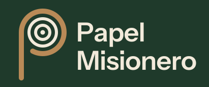
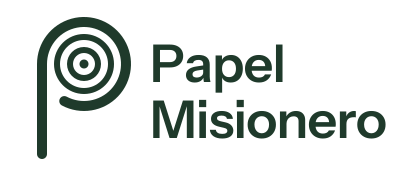
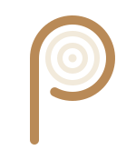
Sello de origen
La marca como certificado de procedencia. Un sello circular reúne la araucaria, el nombre, el lugar y el año de fundación: Misiones, Argentina, 1975. Remite a los sellos de calidad que se estampan sobre bobinas y bolsas, y convierte cada impresión en una garantía de origen, trayectoria y responsabilidad forestal.

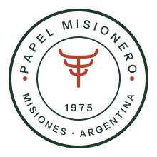
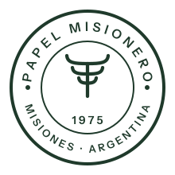
06 — Evaluación
Cinco caminos, una misma vara.
Evaluamos cada propuesta con los criterios que surgen del diagnóstico. La valoración es orientativa y busca ordenar la conversación con el equipo de Cartocor.
| Propuesta | Continuidad | Distintividad | Lectura en flexo | Versatilidad | Proyección global |
|---|---|---|---|---|---|
| 01 Araucaria | ●●●●● | ●●●●● | ●●●●● | ●●●●● | ●●●●● |
| 02 Pliego | ●●●●● | ●●●●● | ●●●●● | ●●●●● | ●●●●● |
| 03 Misionero | ●●●●● | ●●●●● | ●●●●● | ●●●●● | ●●●●● |
| 04 Anillos | ●●●●● | ●●●●● | ●●●●● | ●●●●● | ●●●●● |
| 05 Sello | ●●●●● | ●●●●● | ●●●●● | ●●●●● | ●●●●● |
07 — Sistema
Paleta y tipografía.
Una paleta nacida del paisaje misionero, común a los cinco caminos: el verde profundo de la selva, el kraft del producto, el rojo de la tierra colorada y el tono crudo del papel sin blanquear. Dos familias tipográficas de licencia libre aseguran uso irrestricto en todos los soportes.
Instrument Sans. Una grotesca contemporánea, clara y robusta, para logotipos, señalética, packaging y comunicación técnica.
Fraunces. Una serif con carácter, para títulos, campañas y la voz más cálida de la marca.
08 — Recomendación del estudio
Recomendamos avanzar con Anillos.
Es la propuesta con mayor capacidad de diferenciación y la que mejor cuenta lo que hace única a Papel Misionero: la integración completa, del árbol a la bobina. Funciona a una tinta, resiste la reducción y se proyecta con naturalidad en mercados internacionales.
Si la prioridad es la continuidad con la identidad vigente, la propuesta 01 Araucaria es la alternativa natural. Ambos caminos pueden convivir: la araucaria puede integrarse como sello de origen dentro del sistema de Anillos.
Próximos pasos
- Presentación y selección de un camino creativo junto al equipo de Cartocor.
- Refinamiento del símbolo, ajuste óptico del logotipo y versiones reducidas.
- Pruebas de impresión flexográfica sobre sack kraft y kraftliner.
- Validación con la Fundación Selva Misionera y diálogo con las comunidades de la reserva.
- Manual de identidad y aplicaciones: bolsas, bobinas, flota, señalética, indumentaria y digital.
Fuentes de la investigación